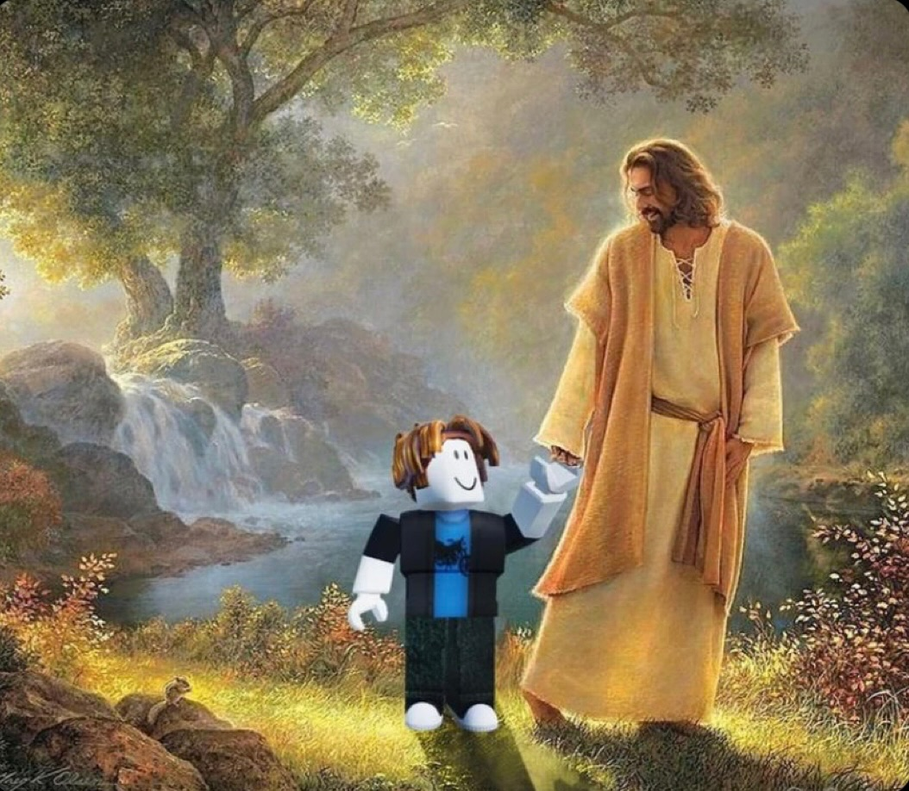

Sobre Mim
Sou um estudante de sistemas de informação, fanático por tecnologia, catolicismo, animes e xadrez, uma mistura um pouco exótica digamos assim. Tenho 17 anos, moro em Padre Paraíso, Minas Gerais.
Contato
Email: gabrielnunes0507@gmail.com
Telefone: (33) 98405-6907
LinkedInHobbies
- Jogar xadrez
- Assistir animes
- Jogar basquete
- Dar um rolê com os amigos
- Escutar um podcast
Ranking dos top 5 melhores animes (na minha opinião)
- Demon Slayer
- Chainsaw Man: O filme - Arco da Reze
- Jujutsu Kaisen
- Re:zero
- Hell's Paradise
Minha Rotina (de segunda a quinta)
| Minha rotina(segunda a quinta) | |
|---|---|
| Horário | Atividade |
| 09:30 | Acordar |
| 10:00 | Estudar |
| 12:00 | Almoçar |
| 14:30 | Tomar banho e me arrumar |
| 16:30 | Pegar o ônibus pra facul |
| 00:00 | Volto pra casa |
| 01:00 | Dormir |
Mídia
Imagem

Vídeo
Curiosidades
- 1. Eu sou católico.
- 2. Meu nome completo é Gabriel Nunes do Rosário.
- 3. Eu tenho um jabuti de estimação.
- 4. Eu tenho TEA de grau 1 (o mais leve).
- 5. Eu sei resolver um cubo mágico.